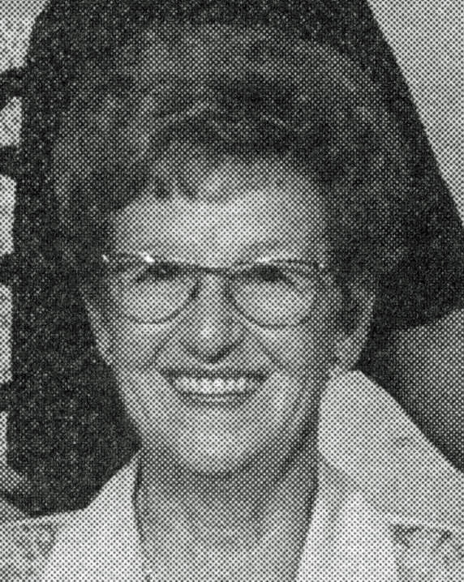
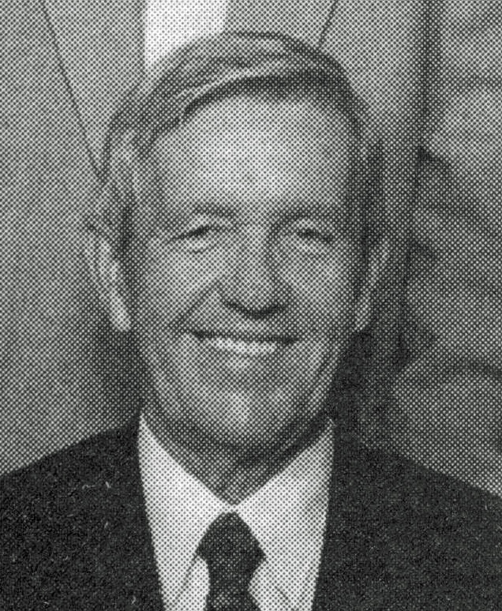

OVILA CHAMPAGNEfiche familiale
*******************************************************************************
Ovila Champagnedécède à l'âge de 47 ans
Naissance 5 avril 1889 à Ste-Clothilde-de-Horton, cté Arthabaska
Décès le 15 mai 1936 à Macamic, cté Abitibi
Sépulture au cimetière de Macamic
Père: Charles-J.-Olivier ChampagneMère: Marie Duval
Mariage le 10 janvier 1910 à Ste-Clothilde-de-Horton
Épouse: Adélina Brièredécède à l'âge de 57 ans
Naissance le 14 déc 1890 à Ste-Clothilde-de-Horton
Décès le 5 avril 1948 à Macamic
Sépulture au cimetière de Macamic
Père: Raphaël BrièreMère: Edesse Allard
*******************************************************************************
Enfant 1 Marie-Rose Champagnedécède à l'âge de 85 ans.
Naissance 10 déc 1911
Décès: 4 fév 1997 à Val-D'Or, cté Abitibi
Sépulture au cimetière de Macamic
Mariage le 17 août 1931 à St-Jean-L'Évangéliste de Macamic
Conjoint: Émile Morissetten. 6 mai 1909 d. 4 mai 1964
Père: Arthur MorissetteMère: Eva Senneville
-------------------------------------------------------------------------------
Enfant 2 Marie-Blanche ChampagneNaissance 13 mai 1912
Décès: en 1997 à Macamic
Sépulture au cimetière de Macamic
Mariage le 1er jul 1936 à St-Jean-L'Évangéliste de Macamic
Conjoint: Lucien Bédardn. 6 déc 1912 d. 12 nov 1942
Père: Henri BédardMère: Marie-Louise Bédard
-------------------------------------------------------------------------------
|
|
Enfant 3 Adrien Champagnedécède à l'âge de 89 ans. Naissance 27 jan 1914 à Ste-Clothilde-de-Horton, cté Arthabaska Décès le 22 sep 2003 à Val-D'Or, cté Abitibi (ses ancêtres)Mariage le 30 mars 1937 à Macamic, cté Abitibi Conjointe: Laurette Henrin. 12 avril 1915 d. 21 juin 2004 Père: Eugène HenriMère: Graziella Provost(sa famille) |
-------------------------------------------------------------------------------
Enfant 4 Albert Champagnedécède à l'âge de 64 ans
Naissance 12 oct 1915
Décès: 31 août 1980
Mariage le 20 jul 1942 à St-Lambert-Desmeloizes, cté Abitibi
Conjointe: Thérèse St-Louisn. 5 mai 1923 d. avant 1999
Père: David St-LouisMère: Laurette Coutu
-------------------------------------------------------------------------------
|
|
Enfant 5 Yvette Champagne
décède à l'âge de 88 ans.
Naissance le 31 mai 1917
Décès le 5 jan 2006 à Rouyn-Noranda, cté Témiscamingue
Funérailles le 9 jan 2006
à Cathédrale St-Joseph de Rouyn-Noranda
Sépulture au cimetière St-Michel de Rouyn-Noranda
Mariage le 15 aoû 1940 à St-Joseph de Cléricy
Conjoint: Louis-Philippe Dallaire
n. 24 nov 1913 d. en 1975
Père: Albert Dallaire
Mère: Angélina Roy |
-------------------------------------------------------------------------------
|
|
Enfant 6 Gérard Champagne
décède à l'âge de 88 ans
Naissance 16 mars 1919
Décès: 9 mai 2007 au Centre hospitalier de La Sarre
Funérailles: 12 mai 2007 à St-Jean-L'Évangéliste de Macamic
Sépulture: au cimetière de Macamic
Conjointe: Yvonne Comeau n. 13 fév 1922 |
-------------------------------------------------------------------------------
Enfant 7 Thérèse Champagnedécède à l'âge de 5 ans
Naissance 27 déc 1921
Décès: 7 avril 1927 à macamic
Sépulture: au cimetière de Macamic
-------------------------------------------------------------------------------
Enfant 8 Lucien Champagnedécède à l'âge de 25 ans
Naissance 24 mars 1923
Décès: 26 nov 1948 à Macamic
Sépulture: au cimetière de Macamic
Mariage le 29 juin 1946 à St-Jean-L'Évangéliste de Macamic
Conjointe: Marguerite De-Ladurantayen. en 1921 d. en 1973
Père: Edmond De-LadurantayeMère: Marie-Louise Collin
-------------------------------------------------------------------------------
Enfant 9 Paul-Émile ChampagneNaissance 21 déc 1924
Mariage le 16 déc 1972
Conjointe: Ruth Brassard n. 11 fév 1932
-------------------------------------------------------------------------------
| 
 |
Enfant 10 Rollande Champagne
Naissance 8 nov 1926
Mariage le 29 juin 1946 à St-Jean-L'Évangéliste de Macamic
Conjoint: André Hamel
n. 6 fév 1925
Père: Henri Hamel
Mère: Yvonne St-Onge |
-------------------------------------------------------------------------------
Enfant 11 Jacques ChampagneNaissance 7 août 1928
Décès: avant 2006
Mariage le 6 juin 1959 à St-Edmond-les-Plaines, cté Lac-St-Jean
Conjointe: Desneige Dion n. 5 juin 1935
Père: Damasse DionMère: Valère Bélanger
-------------------------------------------------------------------------------
Enfant 12 Cécile Champagnedécède à l'âge de 19 ans
Naissance 17 déc 1929 à Macamic
Décès: 7 sep 1949 à Macamic
Sépulture au cimetière de Macamic
-------------------------------------------------------------------------------
Enfant 13 Marcel ChampagneNaissance 20 avril 1931 à Macamic
Décès: avant 1999
Mariage le 18 août 1954 à Immaculée-Conception de Rouyn-Noranda
Conjointe: Blandine Moore n. 28 déc 1932
Père: Prosper MooreMère: Rose-Anna Marceau
-------------------------------------------------------------------------------
Enfant 14 Julien Champagnedécède à l'âge de 1 mois
Naissance 19 jan 1933 à Macamic
Décès: 22 fév 1933 à Macamic
Sépulture: au cimetière de Macamic
-------------------------------------------------------------------------------
Enfant 15 Monique ChampagneNaissance 9 mars 1934 à Macamic
Mariage le 25 mai 1957 à Chibougamau, cté Nouveau-Québec
Conjoint: Gérard Pearson n. 29 jul 1928
Père: Simon PearsonMère: Yvonne Fortin
*******************************************************************************